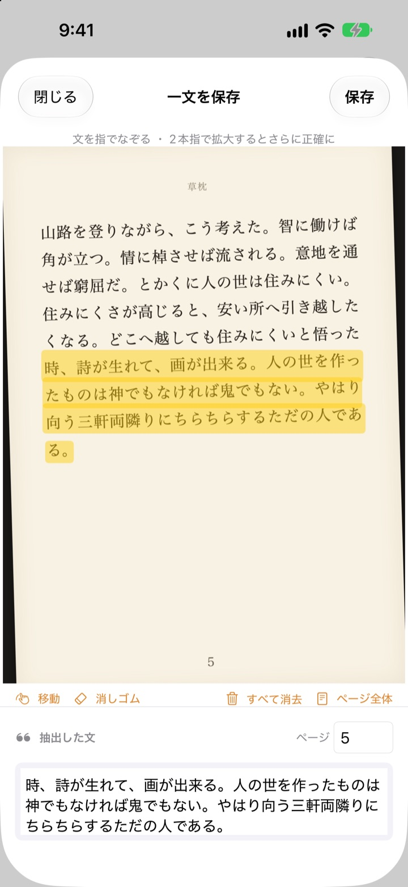
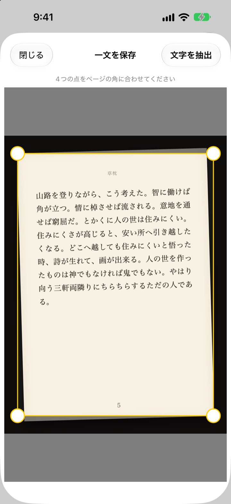
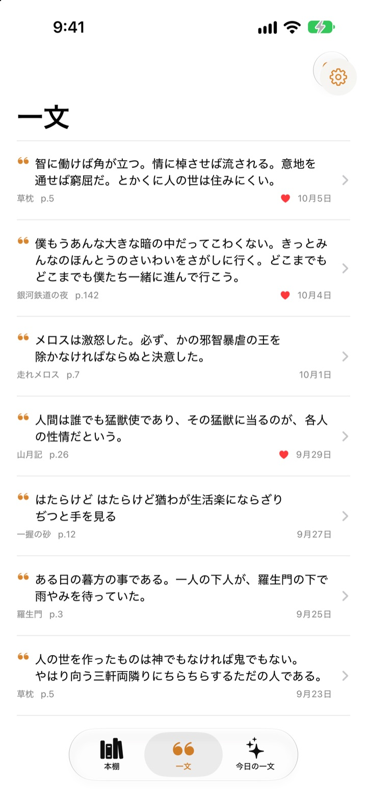
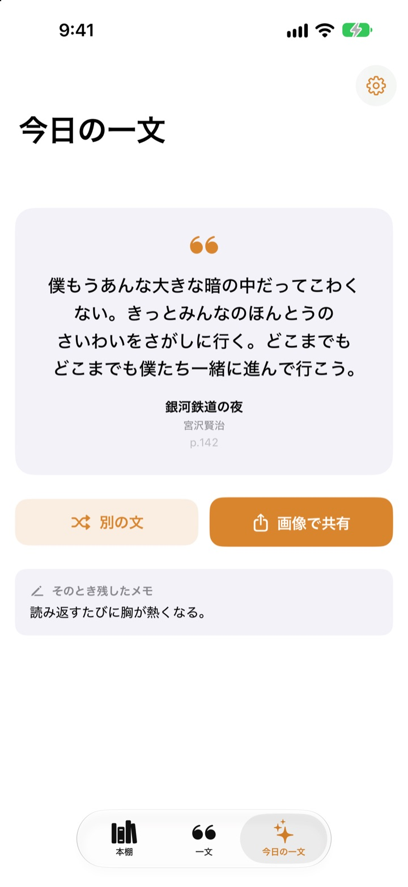

ペンがなくても
本に線を引ける
ページを撮って、好きな一文を指でなぞると、その文だけが文字で保存されます。本のタイトルとページ番号もいっしょに。
すべての機能が無料。広告もありません。

なぞってみよう
下のページで、好きな文を指かマウスでなぞってみてください。なぞった言葉だけがカードに入ります。
心に残った一文、どこにありますか？
図書館の本だから、線は引けない。ページを撮った写真は、何千枚ものカメラロールに埋もれてしまう。メモアプリに打ち込んでも、本のタイトルやページ番号まではなかなか残らない。Bookmark Shotなら、撮って、なぞるだけ。2つの動作で、文と本とページをまとめて残せます。
斜めの写真も、まっすぐなページに
ページを撮ったら四隅を合わせるだけ。斜めに撮った写真も、紙のように平らに整います。文字がくっきりするほど、読み取りも正確になります。
撮影済みの写真からも読み込めます。

集めた一文を、ひとつの場所に
本は表紙が並ぶ本棚に、文はひとつのリストにまとまります。文・メモ・本のタイトルで検索でき、また読みたい文にはハートを付けられます。
本の登録は表紙を1枚撮るだけ。タイトルと著者を読み取り、裏表紙のバーコードが写っていればISBNも入力されます。

忘れていた一文に、また出会う
今日の一文は、保存した文の中からひとつを、そのとき残したメモといっしょに毎日届けます。ウィジェットでホーム画面やロック画面に置いておけます。
気に入ったら、紙のような風合いのカード画像にして共有できます。

はじめ方は3ステップ
- 1
表紙を撮る
タイトルと著者が入力されます。保存する前に修正できます。
- 2
ページを撮る
四隅を合わせると、まっすぐに整います。
- 3
文をなぞる
ページ番号も見つけて、いっしょに保存します。
ハイライト画面の操作
- 指でなぞる
- なぞった言葉だけを選択
- ピンチ
- 拡大して、より正確になぞる
- 移動
- 拡大したページをドラッグして動かす
- 消しゴム
- なぞった言葉を選択から外す
- すべて消去
- 選んだ言葉をすべて外す
- ページ全体
- ページの文字をすべて残す
- ページ欄
- 見つけたページ番号。修正もできます
VoiceOverでは、行をダブルタップして追加・削除できます。
すべての機能が無料
無料
- 表紙から本を登録、バーコードからISBN
- ページの補正と指でのハイライト
- ページ番号の自動入力
- 本棚、文の検索、お気に入り
- 今日の一文と、ホーム画面・ロック画面のウィジェット
- カード画像で共有
- iCloud同期
開発者を応援する
- よろしければ、設定から少額のチップを送れます
- チップで使えるようになる機能はありません。アプリはどちらでも同じです
広告なし、サブスクリプションなし。
よくある質問
写真や保存した文はどこかに送られますか？
いいえ。文字認識はApple Visionを使ってすべて端末の中で行われ、写真や文がサーバーに送られることはありません。オフラインでも使えます。詳しくは下のプライバシーポリシーをご覧ください。
どの言語の本を読み取れますか？
文字認識は端末上のiOSが行います。日本語、英語、韓国語、中国語、ロシア語、西ヨーロッパのほとんどの言語の本を読み取れます。新しいバージョンのiOSでは、タイ語、ベトナム語、トルコ語、インドネシア語、ポーランド語、チェコ語、オランダ語、北欧の言語にも対応しています。ギリシャ語はまだ読み取れません。
残したい文だけを選ぶには？
ページを撮ったら、蛍光ペンで線を引くように文の上を指でなぞってください。その言葉だけが選ばれます。2本指で拡大すると、より正確になぞれます。「消しゴム」「すべて消去」「ページ全体」も使えます。
タイトルや著者が正しく読み取られません。
表紙の認識は文字の大きさから推測しているため、装飾の多い表紙では間違えることがあります。本を保存する前に、タイトルと著者を修正できます。
ページ番号が違います。
ページ番号は写真の端にある数字から読み取っています。保存する前に、ページ欄で直してください。
複数のデバイスで同じ文を見られますか？
はい。同じApple AccountでiCloudにサインインし、iCloud Driveをオンにしていれば、本と文が自動で同期されます。
ウィジェットはどうやって追加しますか？
ホーム画面を長押しして「編集」>「ウィジェットを追加」をタップし、Bookmark Shotを選びます。ロック画面の場合は、長押ししてから「カスタマイズ」をタップします。そこに今日の一文が表示されます。
カメラが使えません。
「設定」›「Bookmark Shot」で、カメラと写真へのアクセスが許可されているか確認してください。撮影にはiPhoneの実機が必要です。
動作環境は？
iOS 17.0以降を搭載したiPhoneでお使いいただけます。
問い合わせ方法は？
アプリの設定（歯車）画面からフィードバックを送るか、下のアドレスまでメールでお寄せください。通常2〜3日以内にお返事します。
ご質問やご意見は leeo@kakao.com までお寄せください。